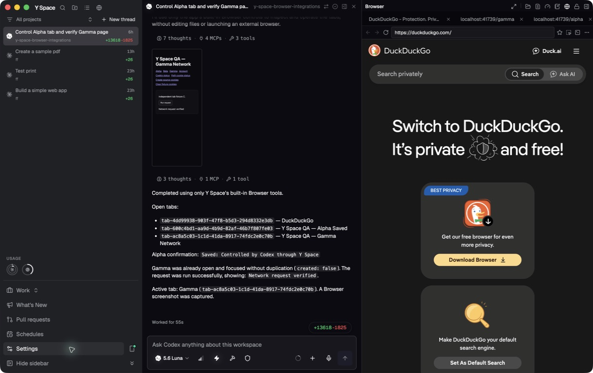
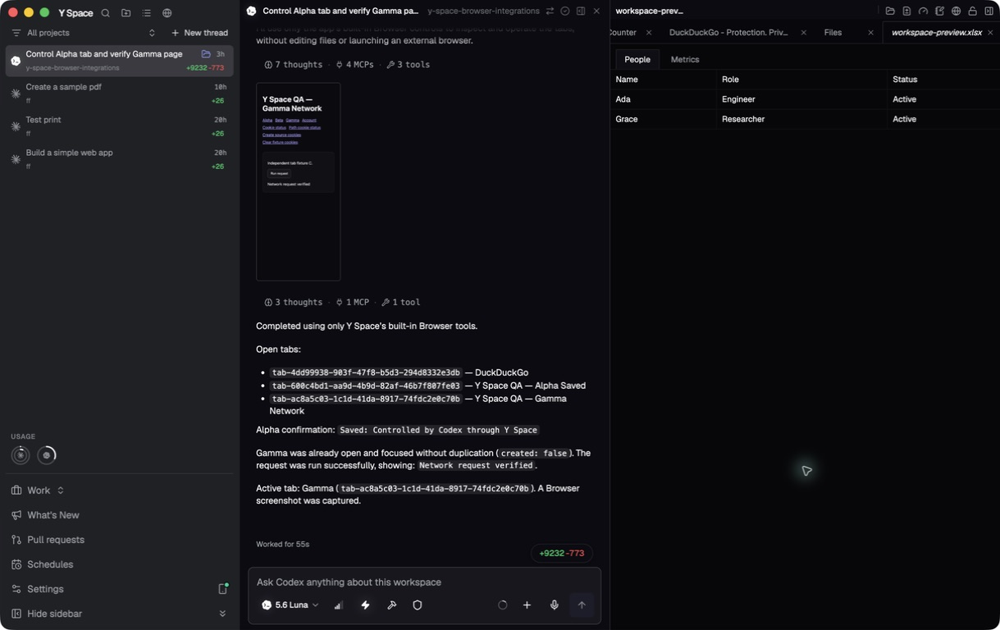
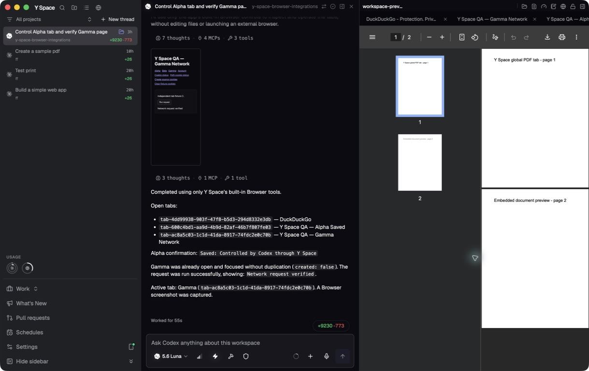
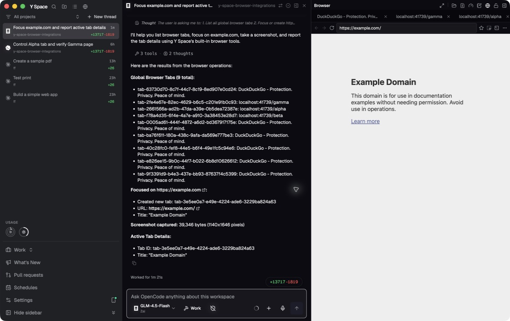
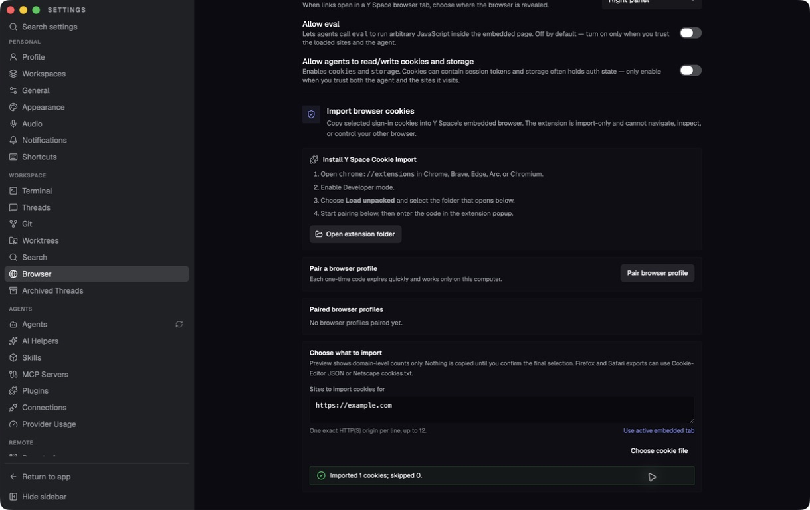
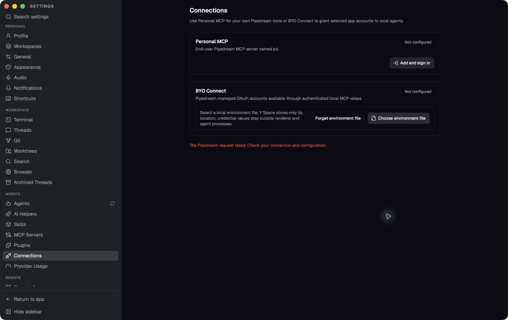
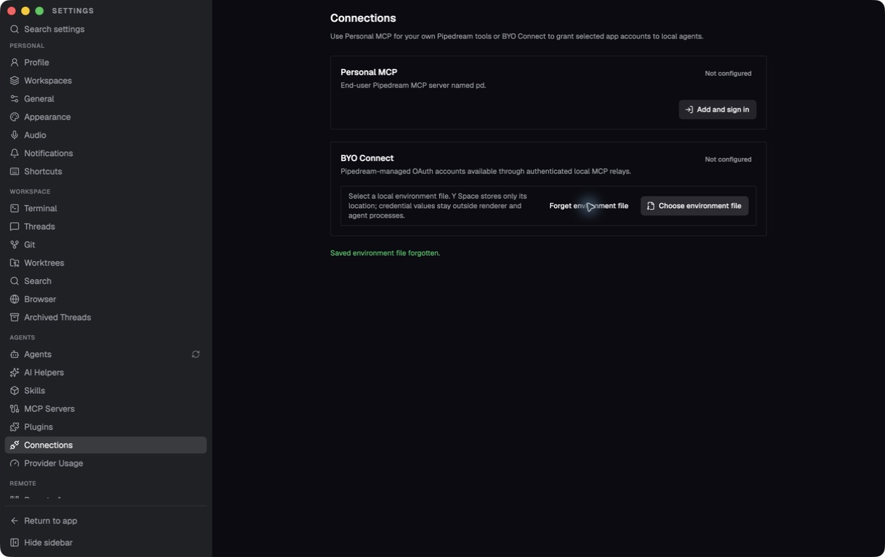

One tab concept
Browser pages, tools, source files, Markdown, PDF, XLS, and XLSX all participate in the same draggable, keyboard-accessible top strip.
Y Space now has one global workspace tab model. Each embedded browser page is its own peer tab beside files, PDFs, spreadsheets, Terminal, Files, Git, Usage, and Notes. There is no browser-within-browser tab strip.
Browser pages, tools, source files, Markdown, PDF, XLS, and XLSX all participate in the same draggable, keyboard-accessible top strip.
Agents can list, find, activate, open-or-focus, inspect, screenshot, and interact with any Y Space browser page by stable ID—even when another workspace tab is visible.
Browser metadata may reach 30 pages, but ordinary live webviews are true-LRU capped at six. Sensitive authentication guests use a separate four-view ceiling.
Every browser global tab owns one URL, history, title, page state, and agent target.
User and agent activation promote the target. The active page is protected and the least-recent inactive ordinary page is suspended first.
Bounded metadata restores pages on demand. Sensitive URLs stay memory-only and are
redacted to about:blank in persistence.
Eviction and close unmount webviews, detach DOM/global listeners, suspend CDP controllers, clear manager state, and ignore stale async callbacks.
| Flow | Result | Observed evidence |
|---|---|---|
| Global browser peers | Pass | Alpha, Gamma, and DuckDuckGo appeared in the sole global strip; no nested strip. |
| Browser create/switch/close | Pass | Cmd+T created a peer browser tab; switching preserved state; guest Cmd+W selected adjacent Files. |
| Top-right tools | Pass | Files, Git, Usage, Notes, Browser, and Terminal opened or focused peer global tabs. |
| Documents | Pass | Source, Markdown, PDF, XLS, XLSX, and malformed-workbook handling stayed inside Y Space. |
| Mixed-tab keyboard access | Pass | Ctrl+Tab cycled between browser peers and crossed from the last browser into Files, including while the browser address field was focused. |
| Bounded browser residency | Pass | A packaged two-cycle churn run created and closed 30 disposable browser peers. Metadata reached 30 and rejected a 31st tab; both peaks held exactly 6 guest renderers, and both cleanups returned to the 4-renderer baseline. Final browser-core RSS was only 0.9% above baseline, original tabs survived intact, closed disposable tabs did not restore, and no helper survived quit. |
| Codex browser control | Pass | gpt-5.6-luna listed pages, edited Alpha, reused Gamma, ran its request, and captured a screenshot. |
| OpenCode models | Pass |
Both live CLI model checks passed. In the final package, ZAI GLM-4.5-Flash used only
Y Space Browser tools, listed all 9 tabs, opened or focused Example Domain without
external browser control, captured a 39,346-byte 1140×1646 screenshot, and returned
Idle. Active tab: tab-3e5ee0a7-e49e-4224-ade6-3229ba824a63.
|
| Cookie-file import | Pass | The native picker imported the harmless example.com fixture with 1 cookie accepted and 0 rejected. No browser extension or external browser was used. |
| Pipedream environment and live API | Read-only pass | The packaged native picker accepted a harmless fixture, safely rejected its fake credentials, and then forgot the saved path. The ignored mode-600 real file then passed production client-credentials exchange plus read-only project, app-catalog (1 Slack sample), and credential-excluding account-list requests (0 accounts for a synthetic QA user). No Connect token, OAuth account grant, or account mutation was created. In the final package, BYO Connect rendered Ready, a hands-on Slack search returned its Connect action, and Connected accounts stayed empty; Connect was not clicked. Clean quit left no Pipedream path or connection-store JSON. Six focused Pipedream boundary files also passed all 34 tests. |
| Native app menu | Pass | The macOS menu showed About Y Space and Quit Y Space. |
| Claude Code | External blocker | 2.1.210 is installed but logged out. A no-tools/no-session Sonnet smoke request stopped before inference with the same authentication blocker; user login is required for a live model run. |







1d1d19638d6e0091f652ce5935ae64c29a84f7d44fcdfcd39e751074e9f49505
Extension-free file import passed in the final package with a harmless example.com fixture: 1 accepted and 0 rejected. Encrypted pairing remains available, but no Chrome or Brave extension was installed, as directed.
The native environment-file path passed its packaged safety flow: a harmless fixture was accepted, fake credentials were rejected without leakage, and the saved path was forgotten. The real ignored mode-600 file then passed the production token broker and read-only project, catalog, and credential-excluding account-list APIs without exposing values. The final packaged UI also rendered Ready and returned the live Slack catalog without persisting connection state. Live OAuth/account connection still awaits explicit authorization.
claude auth login before a live Claude Code browser-control pass.